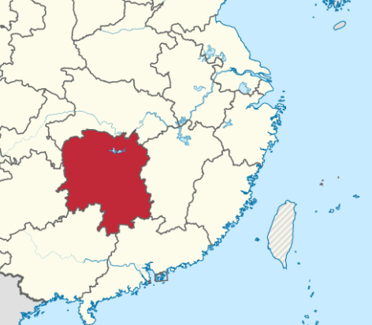
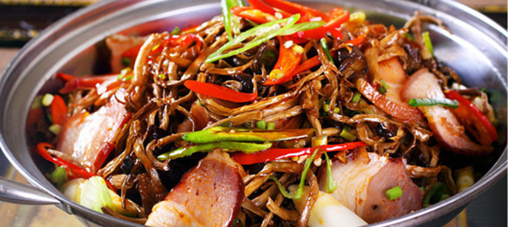
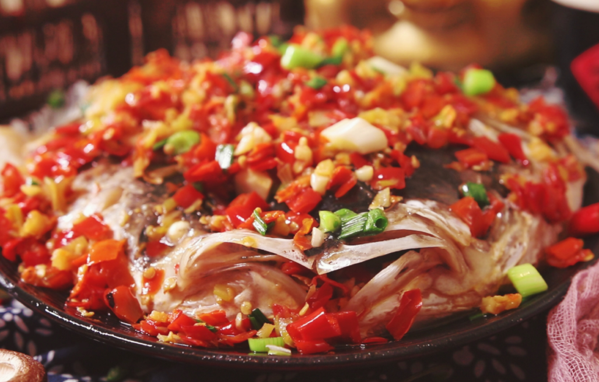

About
Xiang is the abbreviation for Hunan, in the middle north part of China. Hunan enjoys the beautiful Dongting lake, along with continuous mountains, and Hunan people are said to have strong and direct personalities. Their cuisine looks for thick colors and being economical. The food usually tastes very spicy to refresh from the warm and humid weather.


Specialties and Features
With lakes, mountains and a taste for spicy and hot food, the chefs are good at cooking various ingredients along with chili. With so much continuous mountains, both agriculture and economy are not easy to develop, thus Hunan people turn to chili as a cheap method to add flavor, and want their dishes to be economy.